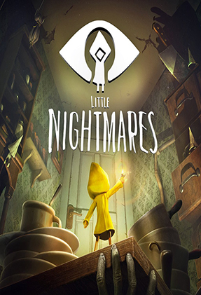

Videojuegos de Terror
Si buscás un videojuego que no te deje dormir por las
noches, que te provoque emociones fuertes, como la ansiedad y el miedo,
esta es tu sección. Acá encontrarás una variedad muy grande de videojuegos de terror.
Pasando por videojuegos donde el sigilo y evitar que te vean es primordial, hasta
videojuegos donde tendrás que enfrentarte a tus miedos con tus propias manos. Asimismo,
encontrarás en la sección destacada al videojuego mejor punteado hasta el momento. En caso de
que no lo conozcas, es una parada obligatoria para esta noche.
Alien: Isolation (2014)

Amanda Ripley, la hija de la legendaria teniente Ellen, protagonista del filme
original de 1979, recibe la noticia de que la caja negra del Nostromo fue
recuperada del espacio y se encuentra en Sevastopol, una inmensa estación
espacial. Junto con otros 2 miembros de la tripulación
del Torrens, Amanda se prepara para ingresar en el Sevastopol, pero un accidente durante
el procedimiento la separa de sus compañeros. Tras un difícil abordaje, Amanda encuentra
la nave en un estado de abandono catastrófico, lleno de humanos hostiles, androides
descompuestos y la amenaza desconocida del Xenomorfo, por lo que tendrá que hacer uso de todo
tipo de recursos para recuperar la caja negra, reunirse con su grupo y escapar
Ver más →
Fatal Frame II (2003)

El juego cuenta la historia de dos hermanas gemelas japonesas, Mayu y Mio, que visitan
el bosque donde jugaban de pequeñas. Mayu empieza a sentir una extraña presencia y parece
ver una mariposa de color carmesí brillante. Al ver a su hermana Mio irse,
decide seguirla por una senda hasta que llegan a lo que parece ser un pueblo abandonado,
cubierto por una extraña oscuridad. Ellas conocen la leyenda de un pueblo al que todo el
mundo llega cuando se pierde en el bosque, y del que no se puede salir. Deciden investigar
en las casas, comenzando por la principal, siguiendo a las extrañas mariposas carmesí.
Ver más →
Little Nightmares (2017)

Una hambrienta niña de nueve años llamada Six es secuestrada en Las Fauces, un misterioso
barco de abastecimiento para el capricho de locas y poderosas criaturas. Después de despertar
en las profundidades más bajas de Las Fauces, Six decide escapar de los confines duros,
teniendo momentos regulares de hambre insoportable. Nuestro objetivo será guiar a Six
hasta la salida, y para ello deberemos superar un montón de puzzles repartidos
por una serie de pesadillescos niveles para poder seguir avanzando.
Ver más →
Outlast (2013)
Miles Upshur, un periodista independiente de un periódico de Denver, recibe un correo
electrónico anónimo que le asegura que, en un hospital psiquiátrico llamado Mount Massive,
están sucediendo sucesos extraños, desde que la corporación Murkoff la compró hace un año.
Cuando llega a la entrada, se encuentra con numerosos camiones del ejército estacionados en la entrada.
Una vez que Upshur logra acceder al interior del complejo, descubre a todos los guardias y agentes
de la división táctica de Murkoff masacrados en el interior de la biblioteca. El único superviviente,
que agonizaba luchando entre la vida y la muerte, le ordena que salga del edificio o sino moriría.
Ver más →
The Quarry (2022)
Es el final del verano en los remotos bosques del norte del estado de Nueva
York, y los jóvenes monitores de Hackett's Quarry tienen el campamento para
ellos solos durante una última noche. Eso significa que no hay niños, ni
adultos, ni reglas.
En esta emocionante historia cinematográfica, controlarás
el destino de nueve monitores del campamento, cuyos planes de
fiesta se convierten en una imprevisible noche de terror. Con decisiones de
vida o muerte en cada momento, las elecciones que tomes determinarán el
desarrollo de la historia.
Ver más →
Among The Sleep (2014)
Among the Sleep nos pone en la piel de un niño en su segundo cumpleaños.
Tras comer un poco de torta, recibir un osito de peluche como regalo y descubrir
que este nos puede hablar cuando estamos solos, nos llevan a la cuna para dormir.
Al despertarnos, la noche ha caído y nuestra madre no está. El osito nos acompañará
en un viaje en su búsqueda, pero no será nada fácil...
Ver más →